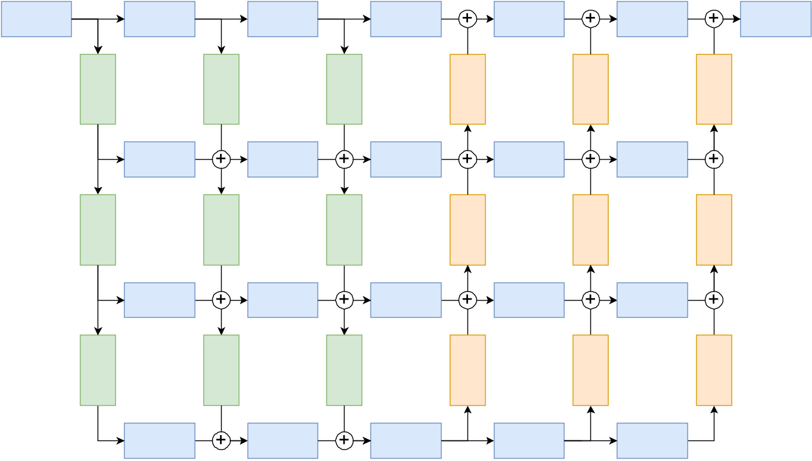
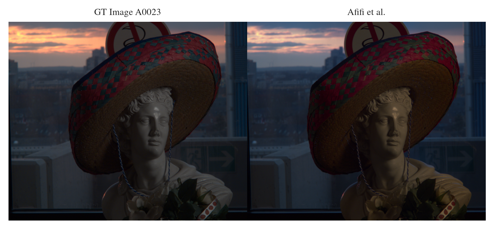
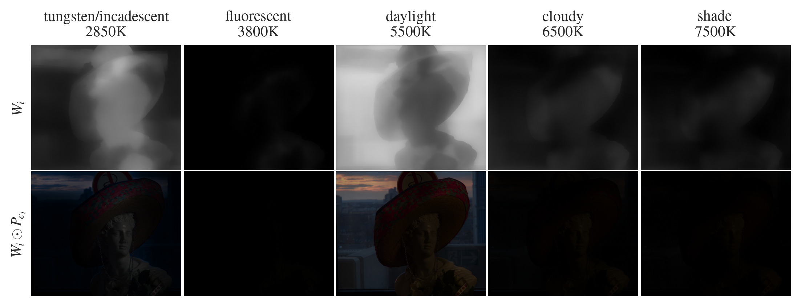
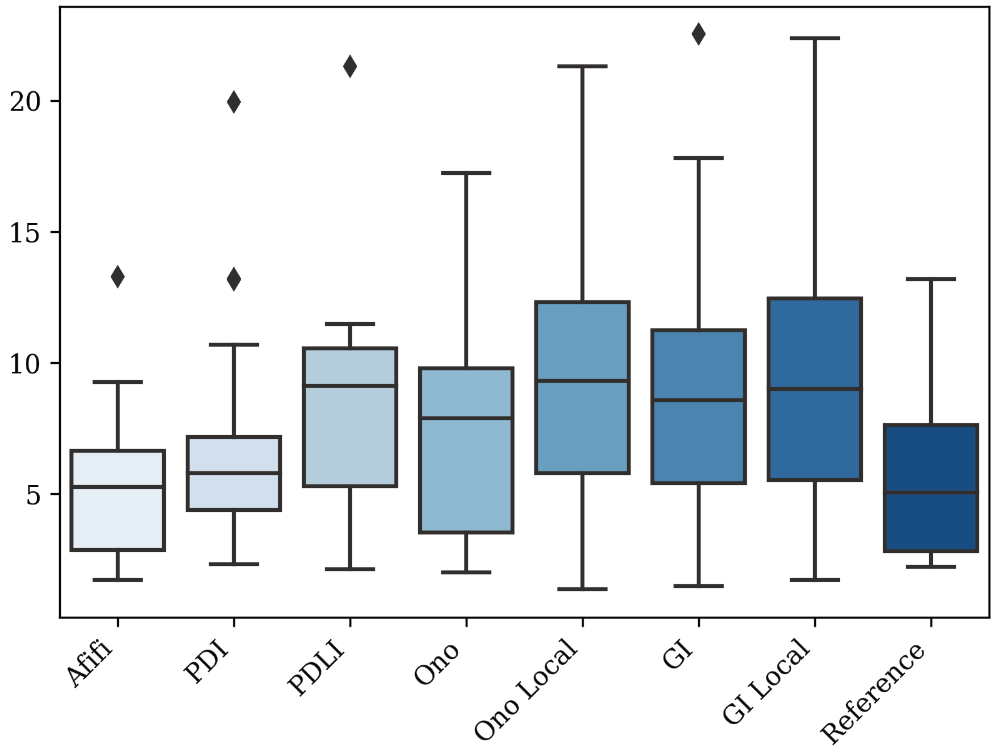

In this project I worked on benchmarking a Deep Learning approach to mixed-illuminant whitebalance in comparison with analytical methods based on images from a polarization camera. In a 5 person team of media technology students at TH Köln, I was responsible for deploying a pre-trained Deep Learning model to our custom camera preprocessing pipeline, that was uniquely designed for the specific camera hardware.
This project showcases my abilities to
work with a custom camera pipeline in Python,
deploy a pre-trained Deep Learning model to a custom infrastructure,
evaluate the performance of a Deep Learning model against analytical methods,
work with image data and to preprocess it for Deep Learning applications efficiently,
think analytically about the problem and to design a custom evaluation data set,
understand complex math behind technical innovation and their contribution to domain-specific problems,
work in a team and to communicate results effectively.
The Deep Learning part
For the whitebalance predictions, we used the Deep Neural Network from Mahmoud Afifi. I wrote a custom class, that holds this model and can be used in our node-based image pipeline. This pipeline is written in Python and uses OpenCV for image processing. It is used to preprocess the raw images from the camera, apply a color profile, and to apply the whitebalance correction to the images.
The DNN has learned to generate mappings for 5 predefined white balance settings, that are commonly used in photography. That makes it possible to use the net in a modified camera. The camera has to render every image with 5 predefined white balance settings no matter what the scene actual demands. The network then creates mappings to correct the white balance in post-processing. When learning about this architecture and how the authors trained it, I was really buffled how they instrumentalized the loss function to achieve visually pleasing results. The overall loss function is defined as \(\mathcal{L}=\mathcal{L}_r + \lambda \mathcal{L}_s\). \(\mathcal{L}_r\) is the following, relatively simple, reconstruction loss: \[
\mathcal{L}_r=||P_{corr}-\sum_i \hat{W}_i \odot P_{c_i} ||_F^2
\]
In this loss function, \(||\cdot||_F^2\) computes the squared Frobenius norm, whereas \(\odot\) is the Hadamard product. \(P_{corr}\) and \(P_{c_i}\) are extracted training patches from the ground truth sRGB images and input sRGB images rendered with the \(C_i\) WB setting, respectively. \(W_i\) is \(i\)-th blending weighting map as generated by the network for \(P_{c_i}\).
To further improve the results, additional steps have been taken by Afifi et al.: Firstly a cross-channel softmax operator has been applied before loss calculation in order to avoid out-of-gamut-colors. In this step, the exponential function is applied to each element and the output is then normalized by dividing by the sum of all new values. Secondly, a regularization term is introduced to the loss function. Hereby, GridNet is trained to produce rather smoothed weighting maps opposed to perfectly accurate maps. This may be due to reasons of generalization as well as visual observation by the researchers. The regularization is applied with \[
\mathcal{L}_s = \sum_i||\hat{W}_i\ast \bigtriangledown _x||_F^2 + || \hat{W}_i \ast \bigtriangledown _y ||_F^2
\]
with \(\bigtriangledown_x\) and \(\bigtriangledown_y\)\(3\times3\) horizontal and vertical (edge detecting) Sobel filters and \(\ast\) being the convolution operator. When all these terms are put together in \(\mathcal{L}=\mathcal{L}_r + \lambda \mathcal{L}_s\). \(\mathcal{L}_r\), the contribution of the regularization/edge-preserving term is controlled by the hyperparameter \(\lambda\). I think it’s really fascinating, how the authors applied image filtering techniques to the weighting maps to achieve a better generalization and visually improved outputs of the network.

Architecture of the GridNet deep neural network as used with six columns and four rows in the MixedIll WB method by Afifi, Brubaker, and Brown (2022). Blue row units are residual units, green column units are convolutional downscaling units (i.e. reducing the dimensions of each feature received from the upper row reduced by two, while the number of output channels is duplicated), whereas orange column units are deconvolutional bilinear upscaling units (increasing the dimensions of the received features by two in the last three columns).
Benchmarking experiments
Now, to compare this Deep Learning approach with the analytical methods, we produced a unique evaluation data set, that is super hard to white balance. We photographed images with extreme mixed illuminant scenarios where two light sources of opposing color temperatures were lighting the scene or sometimes were even visible in the image. We then compared the results of the Deep Learning approach with the analytical methods based on the polarization camera images by employing error metrices.
Let’s see how the DNN works in one example of our benchmarking data set:

Comparison of ground truth (left) and final corrected image with the MixedIllWB method by Afifi, Brubaker, and Brown (2022) (right). The corrected image was generated by applying the weighting maps (bottom row) to the fixed WB images. The scene was illuminated with Skypanels set to \(5928\) K and \(2768\) K, respectively.
We can also inspect, what the DNN did under the hood by plotting the weighting maps and the Hadamard products of the weighting maps and the pre-rendered WB images:

Weighting maps \(W_i\) (top row) and Hadamard products of \(W_i\) and pre-rendered WB images \(P_{c_i}\) (bottom row) for the corresponding WB settings (columns) for MIPo image A0023.
To get the full picture of how well the approach works on our custom evaluation data set, we calculated the \(\Delta E_{00}\) error metric for the corrected images against the ground truth images. The \(\Delta E_{00}\) metric is a color difference metric that is widely used in the industry to evaluate the color difference between two images. The lower the \(\Delta E_{00}\) value, the better the color match between the two images. The Afifi approach is the one on the left; all other approaches are not deep learning based.

Mixed illuminants – \(\Delta E_{00}\): Boxplots of the \(\Delta E_{00}\) metric for white balancing methods against ground truth for corrected images of the MIPo dataset. Boxplot properties: The horizontal line inside the box is the median value. The height of the box is the interquartile range (IQR) between lower and upper quartile. The whiskers mark the minimum and maximum datapoints within the range of \(1.5*\text{IQR}\) from the nearest (lower/upper) quartile. Outliers are datapoints exceeding this definition and are marked with diamond symbols.
Code
Here is my code, that I wrote for the custom class AfifiRenderer. The first part defines two custom dictionary classes, that prevent us from using the model in a wrong way.
Code
class CameraDict(Dict[str, Camera]):"""Custom dict class to ensure keys and values are valid to work in AfifiRenderer. Keys are strings denoting the manual white balance setting. Values are Camera objects. Args: Dict (_type_): Dict class we inherit from. Raises: TypeError: If key is not a str, ValueError: If key is not in ['D', 'S', 'T', 'F', 'C']. TypeError: If value is not of class Camera. """ ALLOWED_KEYS = ["D", "S", "T", "F", "C"]def__setitem__(self, key, value):ifnotisinstance(key, str):raiseTypeError("Keys must be strings")if key notinself.ALLOWED_KEYS:raiseValueError("Key must be one of: "+str(self.ALLOWED_KEYS))ifnotisinstance(value, Camera):raiseTypeError("Values must be instances of the Camera class")super().__setitem__(key, value)class ImageDict(Dict[str, np.ndarray]):"""Custom dictionary to ensure keys and values are valid to work in AfifiRenderer. Keys are strings denoting a manual white balance setting. Values are images of type np.array. Args: Dict (_type_): Base class we inherit from. Raises: TypeError: If key is not a str, ValueError: If key is not in ['D', 'S', 'T', 'F', 'C']. TypeError: If value is not a numpy array. """ ALLOWED_KEYS = ["D", "S", "T", "F", "C"]def__setitem__(self, key, value):ifnotisinstance(key, str):raiseTypeError("Keys must be strings")if key notinself.ALLOWED_KEYS:raiseValueError("Key must be one of: "+str(self.ALLOWED_KEYS))ifnotisinstance(value, np.ndarray):raiseTypeError("Values must be a numpy array.")super().__setitem__(key, value)def array_to_image(img: np.ndarray) -> Image:return fromarray((np.clip(img, 0, 1) * (2**8-1)).astype(np.uint8))def downsize_frame(img: np.ndarray, width=248, height=248) -> np.ndarray:return cv2.resize(img, (width, height), interpolation=cv2.INTER_AREA)def move_weight_files(string_to_move: str="weight"):# Folder admin move_from = Path("wb_algos", "Afifi", "images", "test_net_out") move_to = Path("wb_algos", "Afifi", "images", "test_net_out", "weights")# List the files in a directory filenames = os.listdir(move_from)# Remove the script's name from the list of files, if it is in theretry: filenames.remove(os.path.basename(__file__))exceptValueError:pass# Move files from the input folder to the output folderfor filename in filenames:if string_to_move in filename: path_in = Path(move_from, filename) path_out = Path(move_to, filename)try: shutil.move(path_in, path_out)exceptPermissionError:print(f"An PermissionError occured moving {path_in} -> {path_out}. Moving on." )except shutil.Error:print("Error in shutil.move: I probably have tried to move a directory into itself." )
The second part now defines the AfifiRenderer class, that holds the model and the camera pipeline. The render method applies the model to the images and the save method saves the results to disk.
Code
class AfifiRenderer:"""An AfifiRenderer instance renders a perfectly white-balanced image using Afifi's deep learning approach with 5 cameras. Attributes: camera_dict: A dictionary of five `Camera` objects, each with a preconfigured camera pipeline with a manual white balance for a specific color temperature. Methods: __init__(): Instantiates the AfifiRenderer object with five `Camera` objects, one for each of the white balance settings in `afifi_cct_map`. instantiate_camera_with_nodes(wb_code: str) -> Camera: Instantiates a `Camera` object with a preconfigured camera pipeline for manual white balance with a specific color temperature. This method is used in __init__. render(img: np.array) -> np.array: Renders a perfectly white-balanced image using Afifi's deep learning approach with 5 cameras and passes it to the data loader. Args: img: The raw input image as read in with `cv2.imread()`. Returns: The perfectly rendered Afifi output image. get_weights() -> ImageDict: Returns the weighting maps of the Afifi net. Returns: A dictionary of weighting maps, one for each of the white balance settings in `afifi_cct_map`. """ img_dict: ImageDict camera_dict: CameraDictdef__init__(self, downscale=True) ->None:""" AfifiRenderer.__init__ instantiates 5 Camera objects including necessary pipelines for manual WB with 5 cct values taken from a dict according to Afifis paper. afifi_cct_map = { 'D': { "name": "daylight", "ext": "D_CS.png", "cct": 5500}, 'S': { "name": "shade", "ext": "S_CS.png", "cct": 7500 }, 'T': { "name": "tungsten/incadescent", "ext": "T_CS.png", "cct": 2850 }, 'F': { "name": "fluorescent", "ext": "F_CS.png", "cct": 3800 }, 'C': { "name": "cloudy", "ext": 'C_CS.png', "cct": 6500 } } """self.camera_dict = CameraDict( { wb_code: self.instantiate_cameras(wb_code, downscale=downscale)for wb_code in AFIFI_CCT_MAP.keys() } ) logger.debug(f"AfifiRenderer instantiated with {len(self.camera_dict)} camera objects." )def instantiate_cameras(self, wb_code: str, downscale=True) -> Camera:""" Instantiates a Camera object with a preconfigured camera pipeline for manual white balance with a specific color temperature/cct value. Uses the following Nodes in the pipelines: - Nodes.DebayeringNode, - Nodes.ManualWhitebalanceNode, - Nodes.ColorMatrixNode, - Nodes.GammaCorrectionNode, - Nodes.GainNode, - Nodes.AveragePolarizationImagesNode For images of "S", "T", "F" or "C" the image is downsampled to 384x384 pixels. Default camera values: - Gain = 0.0 - Bit depth = 12 - Edge Aware debayering mode Args: wb_code (str): White Balance code for Afifi. Must be either "D", "S", "T", "F" or "C". Returns: Camera: Preconfigured camera object with a ManualWhiteBalance Pipeline. """self.downscale = downscale camera = Camera() camera.cct = AFIFI_CCT_MAP[wb_code]["cct"] camera.gain =1.0 camera.saveToDiskExtension =".tiff" camera.saveToDiskName =f"{AFIFI_CCT_MAP[wb_code]['ext']}" camera.bitdepth =12 camera.debayerMethod = ColorConversionCode( is_color=True, suffix="_EA" ) # Set debayering method to Edge Aware# Daylight setting is passed in full size, all other images are downscaledif wb_code =="D"ornot downscale: camera.makeNodes( Nodes.DebayeringNode, Nodes.AveragePolarizationImagesNode, Nodes.ManualWhitebalanceNode, Nodes.ColorMatrixNode, Nodes.GammaCorrectionNode, Nodes.GainNode, )else: camera.makeNodes( Nodes.DebayeringNode, Nodes.AveragePolarizationImagesNode, Nodes.DownscalingNode, Nodes.ManualWhitebalanceNode, Nodes.ColorMatrixNode, Nodes.GammaCorrectionNode, Nodes.GainNode, )return cameradef render(self, img: np.array, filename: str="", neptune=False) -> np.array:"""AfifiRenderer.render will render the 5 camera pipelines and pass it to Afifis Dataloader. The daylight setting is passed in full size, all other images are downsized. Then Afifis approach will be applied in test mode/inference mode with the following default parameters: - batch_size: int = 1 - norm: bool = False - model_location: str = None - wb_settings: list = field(default_factory=lambda: ['D', 'S', 'T', 'F', 'C']) - save_weights: bool = True - keep_aspect_ratio: bool = False - multi_scale: bool = True - post_process: bool = True - tedir: str = os.path.join(os.getcwd(), "wb_algos", "Afifi", "images", "test_net_in") - outdir: str = os.path.join(os.getcwd(), "wb_algos", "Afifi", "images", "test_net_out") - gpu: int = 0 - t_size: int = 384 # 'Size before feeding images to the network. Typically, 128 or 256 give good results. If multi-scale is used, then 384 is recommended.' - model_name: str = 'WB_model_p_128_D_S_T_F_C' Args: img (np.array): the raw input image as read in with cv2.imread(). downsize (bool): Flag to control if S, T, F and C images are rescaled before passing to net. Default is True. neptune (bool): Flag to control if neptune logging is used. Default is False. Returns: np.array: The perfectly rendered Afifi output image. """ NEPTUNE_LOGGING = neptune logger.debug("Preprocessing for Afifi: Render manual white balance settings.")self.img_dict = ImageDict( { key: self.camera_dict[key].pipeline.render(img)for key in tqdm(AFIFI_CCT_MAP.keys(), desc="Preprocessing") } )# if 1:# return self.img_dictif0:# Saving the dictionary to a file using picklewithopen("my_dict.pickle", "wb") as handle: pickle.dump(self.img_dict, handle, protocol=pickle.HIGHEST_PROTOCOL)if0:# Loading the dictionary from the saved file using picklewithopen("my_dict.pickle", "rb") as handle:self.img_dict = pickle.load(handle) logger.debug("Performing Mixed-Ill WB correction.") args = TestNetsArguments() device = torch.device("cuda"if torch.cuda.is_available() else"cpu")if device.type!="cpu": torch.cuda.set_device(args.gpu) logger.debug(f"Using device {device}") net = wb_net.WBnet( device=device, norm=args.norm, inchnls=3*len(args.wb_settings) ) model_path = os.path.join( os.getcwd(),"wb_algos","Afifi","mixedillWB","models", args.model_name +".pth", ) net.load_state_dict(torch.load(model_path, map_location=device)) logger.debug(f"Model loaded from {model_path}") net.to(device=device) net.eval()if NEPTUNE_LOGGING: log_neptune(f"TestNetArgs/{filename}/model", type(net).__name__) log_neptune(f"TestNetArgs/{filename}/model_path", model_path) log_neptune(f"TestNetArgs/{filename}/args", str(args.__dict__)) log_neptune(f"TestNetArgs/{filename}/downscale", str(self.downscale))self.img, self.weights_list, self.hadamards = test_net_on_single_img( net=net, device=device, input_files=self.img_dict, batch_size=args.batch_size, post_process=args.post_process, keep_aspect_ratio=args.keep_aspect_ratio, t_size=args.t_size, multi_scale=args.multi_scale, model_name=args.model_name, save_weights=args.save_weights, wb_settings=args.wb_settings, )returnself.imgdef get_weights(self) -> ImageDict:"""Method to get the weighting maps of the Afifi net. Returns: list[np.array]: List of weighting maps in order ['D', 'S', 'T', 'F', 'C']. """return ImageDict( { key: valuefor key, value inzip(["D", "S", "T", "F", "C"], self.weights_list) } )def get_manual_wb_imgs(self) -> ImageDict:returnself.img_dictdef save(self, filename: str="", save_weights: bool=True, save_manual_wb_imgs: bool=True, save_manual_wb_dump: bool=True, save_hadamard_products: bool=True, ):"""Saves the perfectly rendered Afifi image to disk. File format is *.tiff. Flags can be used to save the weight maps and the manual white balanced images as well. Args: savename_without_ext (str): Stem file name without extension. "_Afifi" will be added automatically. Args: savename_without_ext (str): _description_ save_weights (bool): If True, weight maps will be saved. Default is True. save_manual_wb_imgs (bool): If True, the manual white balanced images will be saved. Default is True. """ root_folder = Path(".") img_folder = root_folder /"AfifiCorrectedImages" os.makedirs(img_folder, exist_ok=True) img_savepath = img_folder /f"{filename}_Afifi_corrected.tiff"self.img.save(img_savepath, "TIFF") log_neptune(f"Corrected/{filename}_Afifi_corrected", self.img) mwb_folder = root_folder /"AfifiManualWB" os.makedirs(mwb_folder, exist_ok=True)if save_manual_wb_imgs:for key, value inself.img_dict.items(): mwb_savepath = mwb_folder /f"{filename}_MWB_{key}_.tiff" value = array_to_image(value) value.save(mwb_savepath, "TIFF") log_neptune(f"ManualWB/{filename}/{filename}_MWB_{key}", value)if save_manual_wb_dump:for key, value inself.camera_dict.items(): dump = value.getDump() dump["Timestamp"] = datetime.datetime.now().strftime("%d.%m.%Y %H:%M:%S" ) dump_savepath = mwb_folder /f"{filename}_paramDump_{key}.json" dump = json.dumps(dump, indent=4, sort_keys=True)withopen(dump_savepath, "w") as f: f.write(dump) log_neptune(f"CamPipeParam/{filename}/{filename}_paramDump_{key}", dump)if save_weights: weight_folder = root_folder /"AfifiWeights" os.makedirs(weight_folder, exist_ok=True)if save_weights:for weight, wb inzip(self.weights_list, ["D", "S", "T", "F", "C"]): weight_savename =f"{filename}_Afifi_weight_{wb}.tiff" weight_savepath = os.path.join(weight_folder, weight_savename) weight.save(weight_savepath, "TIFF") log_neptune(f"Weights/{filename}/{filename}_Afifi_weight_{wb}", weight )if save_hadamard_products: hadamard_folder = root_folder /"AfifiHadamard" os.makedirs(hadamard_folder, exist_ok=True)for hadamard_img, wb inzip(self.hadamards, ["D", "S", "T", "F", "C"]): had_savename =f"{filename}_Afifi_hadamard_{wb}.tiff" had_savepath = os.path.join(hadamard_folder, had_savename) hadamard_img.save(had_savepath, "TIFF") log_neptune(f"Hadamard/{filename}/{filename}_Afifi_hadamard_{wb}", hadamard_img )
Here is an example how this would be used:
# Load the raw image that should be processedimg_raw = cv2.imread("images/230119_MlPo_multi_illuminant_polarization_dataset/A0021_0002.tiff", -1) # -1 for uint16# Create an AfifiRenderer instanceafifi_renderer = AfifiRenderer()# Render the imageimg = afifi_renderer.render(img_raw)# Save the image and set flags to save the intermediate images and meta dataafifi_renderer.save("corrected_img", save_weights=True, save_manual_wb_imgs=True, save_manual_wb_dump=True, save_hadamard_products=True, )
References
Afifi, Mahmoud, Marcus A. Brubaker, and Michael S. Brown. 2022. “Auto White-Balance Correction for Mixed-Illuminant Scenes.” In Proceedings of the WACV, 1210–19. Waikoloa: IEEE. https://github.com/mahmoudnafifi/mixedillWB.